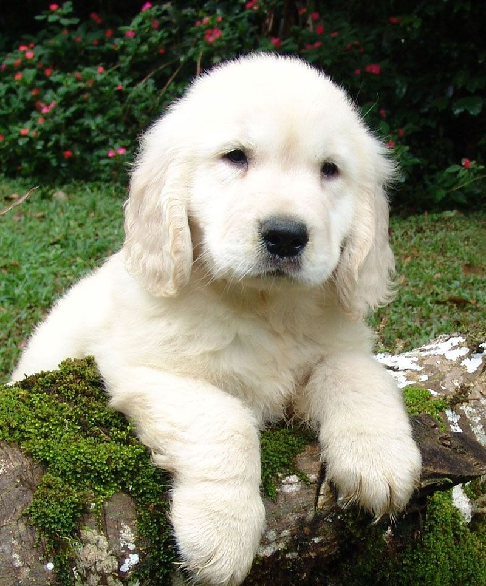

Filhotes de cachorro são cachorros pequenininhos.
| Raça | Altura média | Cor pelagem comum |
|---|---|---|
| Pastor alemão | 55–65 cm | Castanha |
| Golden retriever | 51–61 cm | Dourada |
| Pinscher | 25–30 cm | Preta |
| Chow-chow | 46–56 cm | Dourada |
| Rottweiler | 56–69 cm | Preta/castanha |
| Border collie | 46–56 cm | Preta/branca |
| Shih tzu | 20–28 cm | Branca/marrom |
| Labrador retriever | 54–65 cm | Branca |